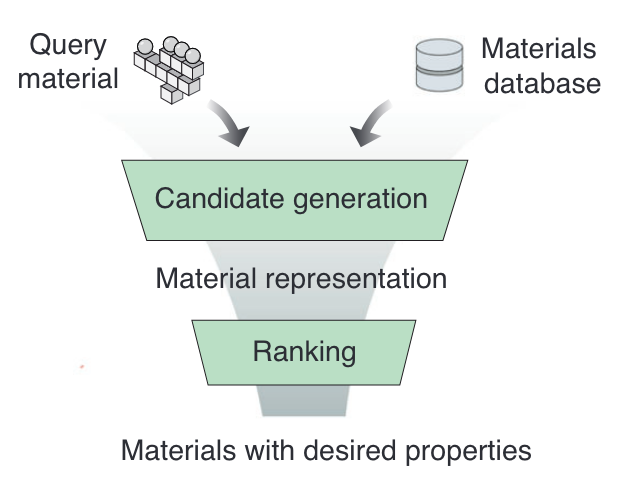

Why discussing this paper?
I chose Jiaxing et al.’s paper for our journal club because
- LLMs successfully applied in other domain, interesting to see what can be done in material science
- One among the few paper where LLMs are applied in materials science for actual material discovery.
- Nice embedding figures
Context
Material space is not completely explored. And there is possibility of finding better materials in many applications.
ML recommender systems for exploring material spaces are already there but not many using “LLMs”
LLM framework for recommending prototype crystal structures and later validate through first-principles calculations and experiments
Why LLMs? - Universal task agnostic representations
Some Previous LLM Models
MatSciBERT
MatsciBERT was pretrained on whole sections of more than 1 million materials science articles with masked language modelling.
MatBERT
MatBERT was trained by sampling 50 million paragraphs from 2 million articles masked language modelling.
Word2Vec
Mat2Vec was trained similarly as Word2vec training through skip-gram with negative sampling. Each word is embedded into a 200-dimensional vector.
Problem setting
Hand-crafted features and specialized structural models have limitations in providing universal and task-agnostic representations within the vast material space.
Additional contexts are also very useful. for eg: (doping, temperature, synthesis conditions)
In materials exploration and discovery context:
- effective representations of both chemical and structural complexity, (ii) successful recall of relevant candidates to property of interest
- accurate candidate ranking based on multiple desired functional properties.
Approach
The authors propose a two-step funnel based approach
- RECALL - Given a material finding similar material from a set of materials
- RANKING - Based on functional properties rank the recalled materials

Recalling similar materials
The authors use Robocrystallographer representation to describe the material. Encode the material description using pretrained MatBERT (compared other encoders as well), and use this as a feature vector
Use a Query material (a well studied known material with property of interest).
Encode all material in database and Query material (Robocrystallographer + MatBERT)
Look at cosine similarity of feature vectors (material in database with Query material)
Ranking potential materials
Based on multiple properties the recalled materials are ranked.
Usually for any application, and in this paper, for thermoelectric material as well many properties are important hence a ranker based on performance on different functional aspects.
- Author train a Multitask Mixture of Expert Model (MMoEM), using multitask learning to rank the materials.

Results
The authors perform ablations to understand the importance of the different components of their model. While there are some differences, the differences are not drastic.
Ablation on Representation suitable for RECALL step
Two set of models 1. Uses only composition of materials Baseline: Mat2Vec
A(Composition)–> B(MatBERT)
- Uses Both composition and structure
Baseline: CrystalNN Fingerprint
A(Material)–> B(RoboCrystallographer)–> C(MatBERT)
Embeddings from composition only and Composition + Structure
Structure level representations exhibit more distinct separation (well-defined domains) by material groups
For further evaluation, authors evaluated material embedding performance on downstream property prediction tasks.
The task models were multi-layer perceptrons (MLPs) with meanabsolute-error (MAE) training loss.
The tasks consisted of band gap, energy per atom, bulk modulus, shear modulus, Debye temperature, and coefficient of thermal expansion from AFLOW dataset.
Finding similar materials
Starting with known materials with favorable properties for TEs such as PbTe, we analyzed the top recalled candidates and found significantly different predicted figure-of-merit zT distributions from selected baseline representations.
Ranking potential materials
Learning from multiple related tasks provides superior performance over single-task learning by modeling task-specific objectives and cross-task relationships.
In addition to the embeddings derived from language models, the authors added further information based on context (one hot encoded temperature)
Takeaways
- Might not need a Language model for this task
- Good to see that some of the materials where later tested in lab
- Composition vs Composition + structure not convincing.